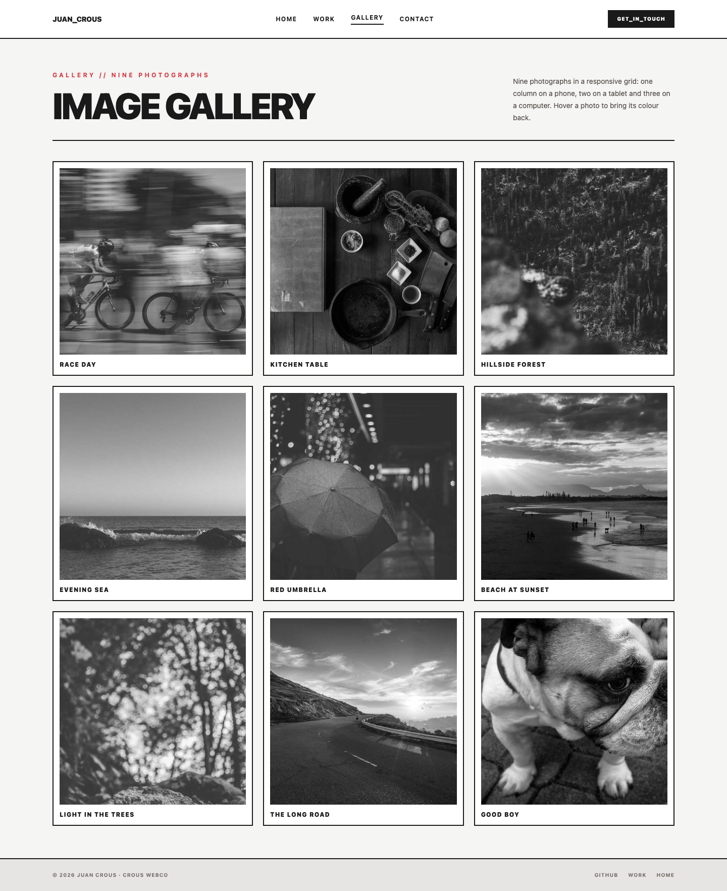
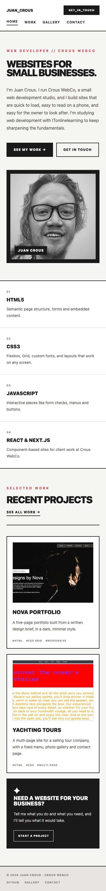

Tailwind CSS · September 2026
Building my portfolio with Tailwind CSS
What I learned building a four-page portfolio site: utility classes, custom theme colours, and the hover effect that didn't work until I fixed one thing.
I've just finished my portfolio site, built with Tailwind CSS. It's four pages — a home page, my work, an image gallery and a contact page — and it's live on GitHub Pages.
Live site: the site you're on
Code: github.com/crouswebco-max
Video: the walkthrough on YouTube
Why Tailwind
Normally I write CSS in its own file and give things class names like .card or .hero. Tailwind works the other way around: you build the design from small utility classes in the HTML.
<article class="border-2 border-deep-charcoal bg-white p-5">That's a bordered white box with padding, without opening a stylesheet at all.
What I liked was how quickly I could try something. Changing the padding on every card meant changing one class, not hunting through a stylesheet. What took getting used to is how long the class lists get — a card can carry a dozen classes, and at first that looked messy to me. It stopped bothering me once I noticed I was no longer scrolling between two files to make one change.
The layout
The site is a grid on a computer and a single column on a phone. Tailwind handles that with prefixes:
<section class="grid grid-cols-1 gap-5 sm:grid-cols-2 lg:grid-cols-3">One column by default, two once the screen is tablet-sized, three on a computer. The gallery uses exactly that.

The header was the fiddliest part. On a phone the logo, menu and button wouldn't fit on one line, so the menu wraps onto a second row:
<div class="order-last flex w-full sm:order-none sm:w-auto">Full width and last in order on small screens, back in line on bigger ones.
Custom colours
Tailwind ships with its own palette, but I wanted my own two colours. You can add them in an @theme block:
@theme {
--color-brand-red: #da373d;
--color-deep-charcoal: #1a1a1a;
}After that bg-brand-red, text-brand-red and border-brand-red all work, exactly like the built-in colours.
Hover effects
Each project card has a photo that grows slightly when you hover it. That's a group on the card and group-hover:scale-105 on the image, with overflow-hidden on the box so the photo doesn't spill out:
<article class="group border-2 border-deep-charcoal">
<div class="aspect-[4/3] overflow-hidden">
<img class="h-full w-full object-cover transition duration-500 group-hover:scale-105" src="...">
</div>
</article>One thing I got wrong at first: a zoom won't work on an inline element. Whatever you're scaling has to be block or inline-block, or nothing happens at all.

What I'd do next
Connect the contact form to something that actually sends the message, and write proper case studies for the two client sites rather than short descriptions.
This was built as the Tailwind checkpoint project for my web development course with ITonlinelearning.